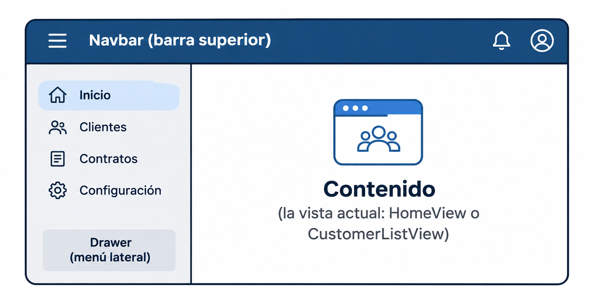
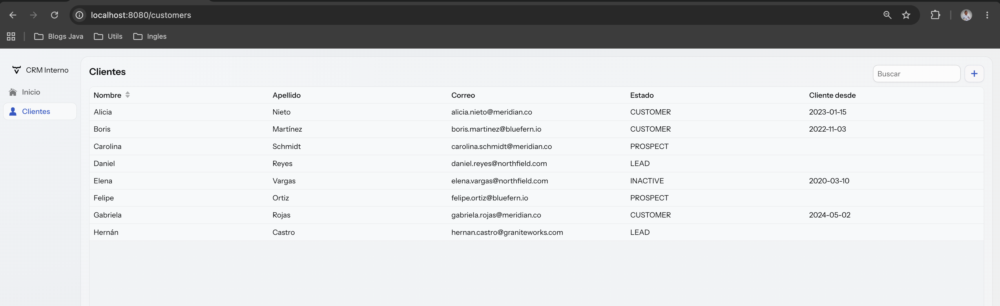

Sesión 7: App shell y navegación¶
Resumen de la sesión
- Al terminar vas a tener: un marco común para toda la app, con logo, nombre y un menú lateral para ir entre Inicio y Clientes.
- Conceptos nuevos:
AppLayout,@Layout, drawer,SideNavySideNavItem, navegación type-safe.
De dónde partimos¶
La app tiene dos vistas: HomeView en / y CustomerListView en
/customers.
El problema¶
La única forma de ir de una pantalla a otra es escribir la URL a mano. Ningún usuario va a hacer eso. Además, cada pantalla está "suelta": no hay nombre de la aplicación, ni logo, ni un menú común.
Concepto: el app shell¶
Un app shell (o layout principal) es el marco que envuelve todas
las pantallas: lo que no cambia al navegar. En Vaadin se construye
con AppLayout, que tiene tres zonas:

Al navegar, solo cambia la zona de contenido. El drawer y la barra se quedan.
Paso 1: Un layout vacío¶
Crea src/main/java/com/baqjug/crm/ui/MainLayout.java:
package com.baqjug.crm.ui;
import com.vaadin.flow.component.applayout.AppLayout;
import com.vaadin.flow.router.Layout;
@Layout
public class MainLayout extends AppLayout {
}
extends AppLayout: hereda las tres zonas.@Layoutsin argumentos: este layout envuelve todas las rutas de la aplicación. No hay que tocar ningún@Routeni listar vistas.
Guarda y mira: apenas se recarga, aparece un marco alrededor de las dos vistas. Todavía vacío.
Paso 2: El menú a la izquierda¶
setPrimarySection decide qué zona manda:
| Valor | Resultado |
|---|---|
Section.NAVBAR (por defecto) |
La barra superior ocupa todo el ancho; el drawer queda debajo |
Section.DRAWER |
El drawer ocupa todo el alto, a la izquierda; la barra queda a su lado |
Para una herramienta interna con menú, DRAWER es lo habitual.
Paso 3: El menú de navegación¶
var nav = new SideNav();
nav.addItem(new SideNavItem("Inicio", HomeView.class, VaadinIcon.HOME.create()));
addToDrawer(nav);
Imports:
import com.vaadin.flow.component.icon.VaadinIcon;
import com.vaadin.flow.component.sidenav.SideNav;
import com.vaadin.flow.component.sidenav.SideNavItem;
SideNavItem recibe tres cosas: el texto, la clase de la vista y un
ícono opcional. addToDrawer(...) pone el menú en el drawer.
Guarda y mira: aparece "Inicio" en el menú. Haz clic: lleva a /.
Ahora agrega Clientes:
Guarda y mira: navega entre las dos. El ítem de la vista actual se resalta solo: no escribimos nada para eso.
Por qué la clase y no la URL
SideNavItem recibe CustomerListView.class, no el texto
"customers". La ruta se lee del @Route de esa clase. Ventajas:
- Si mañana cambias
@Route("customers")por@Route("clientes"), el menú sigue funcionando sin tocarlo. - Un error de tipeo (
CustomerListVew.class) es un error de compilación, no un enlace roto que descubre un usuario.
Paso 4: Logo y nombre de la app¶
var logo = VaadinIcon.VAADIN_H.create();
var appName = new Span("CRM Interno");
var header = new HorizontalLayout(logo, appName);
addToDrawer(header, nav);
Imports:
import com.vaadin.flow.component.html.Span;
import com.vaadin.flow.component.orderedlayout.HorizontalLayout;
Span es un texto en línea, como <span> en HTML. Cambia el
addToDrawer(nav) anterior por addToDrawer(header, nav): el encabezado
va primero, arriba del menú.
Guarda y mira: el logo y el nombre quedan pegados al borde.
Paso 5: Espacio alrededor del encabezado¶
VerticalLayout trae relleno (padding) por defecto, pero
HorizontalLayout no. Hay que activarlo.
Guarda y mira: el encabezado respira.
Código completo al cierre de la sesión¶
MainLayout.java
package com.baqjug.crm.ui;
import com.vaadin.flow.component.applayout.AppLayout;
import com.vaadin.flow.component.html.Span;
import com.vaadin.flow.component.icon.VaadinIcon;
import com.vaadin.flow.component.orderedlayout.HorizontalLayout;
import com.vaadin.flow.component.sidenav.SideNav;
import com.vaadin.flow.component.sidenav.SideNavItem;
import com.vaadin.flow.router.Layout;
@Layout
public class MainLayout extends AppLayout {
public MainLayout() {
setPrimarySection(Section.DRAWER);
var logo = VaadinIcon.VAADIN_H.create();
var appName = new Span("CRM Interno");
var header = new HorizontalLayout(logo, appName);
header.setPadding(true);
var nav = new SideNav();
nav.addItem(new SideNavItem("Inicio", HomeView.class, VaadinIcon.HOME.create()));
nav.addItem(new SideNavItem("Clientes", CustomerListView.class, VaadinIcon.USER.create()));
addToDrawer(header, nav);
}
}
CustomerListView y HomeView no cambian en esta sesión.

Verifica¶
- [ ] Las dos vistas aparecen dentro del mismo marco.
- [ ] El menú está a la izquierda, con logo y "CRM Interno" arriba.
- [ ] Clic en "Inicio" lleva a
/; clic en "Clientes" lleva a/customers. - [ ] El ítem de la vista actual está resaltado.
Para profundizar: el menú en pantallas angostas
En una ventana angosta (un celular), AppLayout convierte el drawer
en un panel que se superpone al contenido. Para que el usuario pueda
abrirlo y cerrarlo, agrega un botón de menú en la barra superior:
Import: com.vaadin.flow.component.applayout.DrawerToggle.
Errores comunes¶
| Síntoma | Causa | Solución |
|---|---|---|
| No aparece el marco | Falta @Layout |
Agrégalo sobre la clase |
El import de @Layout no compila |
Importaste otra anotación Layout |
com.vaadin.flow.router.Layout |
| El menú está arriba, no a la izquierda | Falta setPrimarySection(Section.DRAWER) |
Agrégalo en el constructor |
SideNavItem no encuentra CustomerListView |
Está en otro paquete sin import | Impórtala, o deja ambas clases en ui |
| El encabezado queda pegado al borde | HorizontalLayout no trae padding |
header.setPadding(true) |
Qué resolvimos¶
- Un marco común para todas las pantallas con
AppLayouty una sola anotación,@Layout. - Navegación sin URLs a mano, con el ítem activo resaltado de fábrica.
- Navegación type-safe: el menú apunta a clases, no a textos.
Checkpoint¶
Sigue con la Sesión 8.